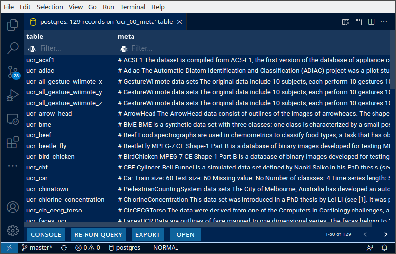
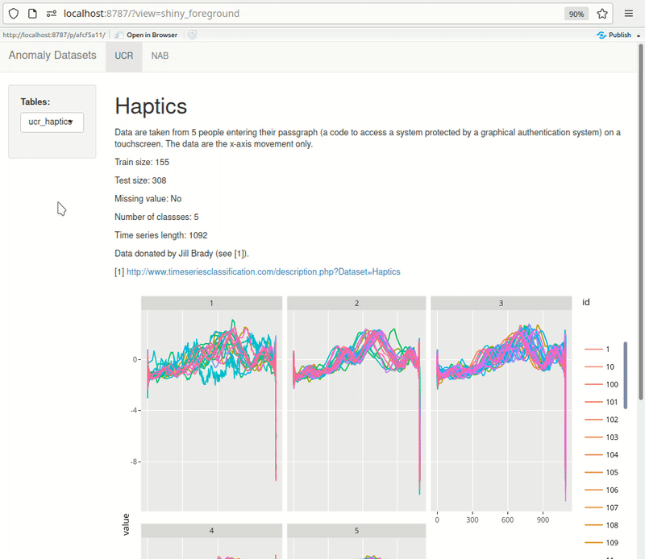

Making the Anomaly Database
This is part two of the two part post related to Docker, Postgres databases and Anomaly data-sets. Read Part 1, which teaches you how to setup a new postgres database using Docker.
This post describes how you populate the anomaly database built in Part 1.
Motivation
Continuing the theme of end-to-end reproducible workflows, I want to be able to recreate my raw database programmatically as well.
At the end of this activity, I’m able to quickly load and manage ~6G of data for my personal use.

The entire codebase for populating the database is in my GitHub repo.
Who should read this?
If you’re comfortable using download.file(), system commands, arff file formats, and {DBI} you won’t learn much here. Read on if you’re curious about my approach.
Steps
Only three files here:
- Initial Setup (
00-execute.R) - Download data from the web (
01-download-data.R) - Load data into
anomalydatabase in Postgres (02-load-data-to-postgres.R)
Initial Setup
A list helps be keep track of the data sources, and helps me turn any downloads off to save on space/time (the Monash one is a ~2G download, for example).
datasets <- list(
ionosphere = TRUE,
nab = TRUE,
monash = TRUE, # 2G download, 6G uncompressed
ucr = TRUE
)Some simple housekeeping to ensure directories are setup correctly. Furthermore, if the folder is git controlled, the directory which will house the datasets large_data needs to be in .gitignore. I check for this.
# create large_data/ if does not exist
if (!fs::dir_exists(here::here("large_data"))) {
cli::cli_alert("{here::here('large_data')} does not exist")
resp <-
usethis::ui_yeah(
"Create {here::here('large_data')}?",
yes = "Y",
no = "N",
shuffle = F
)
if (!resp)
stop()
fs::dir_create(here::here("large_data"))
}
# git but no gitignore?
if (fs::dir_exists(here::here(".git")) &
!fs::file_exists(here::here(".gitignore"))) {
cli::cli_alert_danger(
"You have a git project, but no .gitignore. You must add {here::here('large_data')} to .gitignore since the data are massive."
)
stop()
}
# gitignore but large_data missing?
if (fs::file_exists(here::here(".gitignore")) &
!any(grepl("large_data", readLines(here::here(".gitignore"))))) {
cli::cli_alert_danger(
"Your .gitignore does not have `large_data` specified. Add this to continue, since the data are massive."
)
stop()
}Download Data
Now, for those datasets in the list above, simply download the data using download.file() for the selected datasets and move/unzip them to the large_data folder. I’m also checking if the folder already exists, and I’d like to overwrite it.
Here’s an example for the UCR dataset. The code for the rest of the datasets is pretty similar.
if(datasets$ucr){
DIR <- here::here("large_data/UCRArchive_2018")
resp <- T
if(fs::dir_exists(DIR)){
resp <- usethis::ui_yeah("{DIR} already exists. Re-download data?", "Y", "N", shuffle = F)
fs::dir_delete(here::here("large_data/UCRArchive_2018"))
}
if(resp){
download.file(url = "https://www.cs.ucr.edu/%7Eeamonn/time_series_data_2018/UCRArchive_2018.zip",
destfile = here::here("large_data/UCRArchive_2018.zip"))
system(command = glue::glue('unzip -P someone {here::here("large_data/UCRArchive_2018.zip")} -d {here::here("large_data")}'))
fs::file_delete(here::here("large_data/UCRArchive_2018.zip"))
}
}Load Data
Now, it’s as easy as:
- Connect to the postgres database using
DBI::dbConnect - Read a dataset from
large_data/ - Simple cleanup (
janitor::clean_names, all timestamp cols are calledtimeetc) - Use
DBI::dbWriteTableto load the data into postgres
Here’s an example codebase:
# DB Connection ----
con <- DBI::dbConnect(
drv = RPostgres::Postgres(),
dbname = "anomaly",
host = "db",
user = "rahul",
password = "pass",
port = 5432
)
if (datasets$ionosphere) {
dat <-
read_csv("large_data/ionosphere/ionosphere.data", col_names = F) %>%
rename(class = X35)
DBI::dbWriteTable(con, "ionosphere", dat)
# Quick check
con %>% dplyr::tbl("ionosphere")
}For the monash dataset, you do need to use foreign::read.arff().
Tips
Large file downloads will timeout within the default timeout-window of 1 min. Handle this before calling download.file().
timeout.existing <- getOption("timeout")
on.exit(options(timeout = timeout.existing))
options(timeout = 60*60)Data dictionaries can be stored directly in the DB too. I store the contents of each README.md in the UCR_Archive2018/* folder in a data dictionary table called ucr_00_meta. This allows me to programatically call the dictionary in downstream development.

Shiny can be effectively used for quick exploration. Here’s an example of something I’m building for myself. The dashboard pulls data from PostgreSQL directly. UCR metadata is also pulled from the db rendered at the top of each page, making it quick to browse through the datasets. As I add more datasets, I keep expanding this dashboard.
